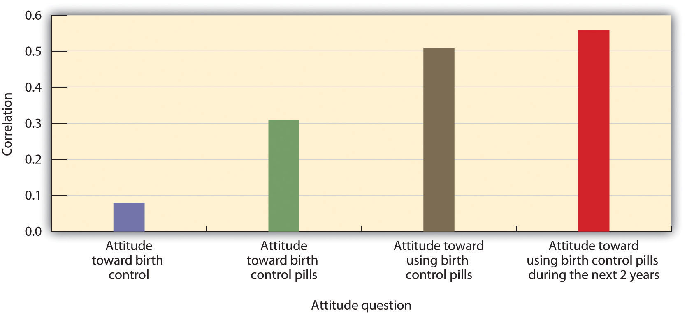

Although we might use the term in a different way in our everyday life (“Hey, he's really got an attitude!”), social psychologists reserve the term attitudeAn evaluation of the people, ideas, groups, products, and other objects that surround us. to refer to our relatively enduring evaluation of something, where the something is called the attitude object. The attitude object might be a person, a product, or a social group (Albarracín, Johnson, & Zanna, 2005; Wood, 2000).Albarracín, D., Johnson, B. T., & Zanna, M. P. (Eds.). (2005). The handbook of attitudes (pp. 223–271). Mahwah, NJ: Lawrence Erlbaum; Wood, W. (2000). Attitude change: Persuasion and social influence. Annual Review of Psychology, 539–570. In this section we will consider the nature and strength of attitudes and the conditions under which attitudes best predict our behaviors.
When we say that attitudes are evaluations, we mean that they involve a preference for or against the attitude object, as commonly expressed in such terms as prefer, like, dislike, hate, and love. When we express our attitudes—for instance, when we say, “I love Cheerios,” “I hate snakes,” “I'm crazy about Bill,” or “I like Italians”—we are expressing the relationship (either positive or negative) between the self and an attitude object. Statements such as these make it clear that attitudes are an important part of the self-concept—attitudes tie the self-concept to the attitude object, and so our attitudes are an essential part of “us.”
Every human being holds thousands of attitudes, including those about family and friends, political parties and political figures, abortion rights and terrorism, preferences for music, and much more. Each of our attitudes has its own unique characteristics, and no two attitudes come to us or influence us in quite the same way. Research has found that some of our attitudes are inherited, at least in part, via genetic transmission from our parents (Olson, Vernon, Harris, & Jang, 2001).Olson, J. M., Vernon, P. A., Harris, J. A., & Jang, K. L. (2001). The heritability of attitudes: A study of twins. Journal of Personality and Social Psychology, 80(6), 845–860. Other attitudes are learned mostly through direct and indirect experiences with the attitude objects (De Houwer, Thomas, & Baeyens, 2001).De Houwer, J., Thomas, S., & Baeyens, F. (2001). Association learning of likes and dislikes: A review of 25 years of research on human evaluative conditioning. Psychological Bulletin, 127(6), 853–869. We may like to ride roller coasters in part because our genetic code has given us a thrill-loving personality and in part because we’ve had some really great times on roller coasters in the past. Still other attitudes are learned via the media (Hargreaves & Tiggemann, 2003; Levina, Waldo, & Fitzgerald, 2000)Levina, M., Waldo, C. R., & Fitzgerald, L. F. (2000). We’re here, we’re queer, we’re on TV: The effects of visual media on heterosexuals’ attitudes toward gay men and lesbians. Journal of Applied Social Psychology, 30(4), 738–758; Hargreaves, D. A., & Tiggemann, M. (2003). Female “thin ideal” media images and boys’ attitudes toward girls. Sex Roles, 49(9–10), 539–544. or through our interactions with friends (Poteat, 2007).Poteat, V. P. (2007). Peer group socialization of homophobic attitudes and behavior during adolescence. Child Development, 78(6), 1830–1842. Some of our attitudes are shared by others (most of us like sugar, fear snakes, and are disgusted by cockroaches), whereas other attitudes—such as our preferences for different styles of music or art—are more individualized.
Table 5.1 "Heritability of Some Attitudes" shows some of the attitudes that have been found to be the most highly heritable (i.e. most strongly determined by genetic variation among people). These attitudes form earlier and are stronger and more resistant to change than others (Bourgeois, 2002),Bourgeois, M. J. (2002). Heritability of attitudes constrains dynamic social impact. Personality and Social Psychology Bulletin, 28(8), 1063–1072. although it is not yet known why some attitudes are more genetically determined than are others.
Table 5.1 Heritability of Some Attitudes
| Attitude | Heritability |
|---|---|
| Abortion on demand | 0.54 |
| Roller coaster rides | 0.52 |
| Death penalty for murder | 0.5 |
| Open-door immigration | 0.46 |
| Organized religion | 0.45 |
| Doing athletic activities | 0.44 |
| Voluntary euthanasia | 0.44 |
| Capitalism | 0.39 |
| Playing chess | 0.38 |
| Reading books | 0.37 |
| Exercising | 0.36 |
| Education | 0.32 |
| Big parties | 0.32 |
| Smoking | 0.31 |
| Being the center of attention | 0.28 |
| Getting along well with other people | 0.28 |
| Wearing clothes that draw attention | 0.24 |
| Sweets | 0.22 |
| Public speaking | 0.2 |
| Castration as punishment for sex crimes | 0.17 |
| Loud music | 0.11 |
| Looking my best at all times | 0.1 |
| Doing crossword puzzles | 0.02 |
| Separate roles for men and women | 0 |
| Making racial discrimination illegal | 0 |
| Playing organized sports | 0 |
| Playing bingo | 0 |
| Easy access to birth control | 0 |
| Being the leader of groups | 0 |
| Being assertive | 0 |
| Ranked from most heritable to least heritable. Data are from Olson, Vernon, Harris, and Jang (2001).Olson, J. M., Vernon, P. A., Harris, J. A., & Jang, K. L. (2001). The heritability of attitudes: A study of twins. Journal of Personality and Social Psychology, 80(6), 845–860. | |
Our attitudes are made up of cognitive, affective, and behavioral components. Consider my own attitude toward chocolate ice cream, which is very positive and always has been, as far as I can remember.
In terms of affect:
I LOVE it!
In terms of behavior:
I frequently eat chocolate ice cream.
In terms of cognitions:
Chocolate ice cream has a smooth texture and a rich, strong taste.
My attitude toward chocolate ice cream is composed of affect, behavior, and cognition.
Although most attitudes are determined by cognition, affect, and behavior, there is nevertheless variability in this regard across people and across attitudes. Some attitudes are more likely to be based on beliefs, some more likely to be based on feelings, and some more likely to be based on behaviors. I would say that my attitude toward chocolate ice cream is in large part determined by affect—although I can describe its taste, mostly I just like it. My attitudes toward my Toyota Corolla and my home air conditioner, on the other hand, are more cognitive. I don't really like them so much as I admire their positive features (the Toyota gets good gas mileage and the air conditioner keeps me cool on hot summer days). Still other of my attitudes are based more on behavior—I feel like I’ve learned to like my neighbors because I’ve done favors for them over the years (which they have returned) and these helpful behaviors on my part have, at least in part, led me to develop a positive attitude toward them.
Different people may hold attitudes toward the same attitude object for different reasons. Some people voted for Barack Obama in the 2008 elections because they like his policies (“he's working for the middle class”; “he wants to increase automobile fuel efficiency”), whereas others voted for (or against) him because they just liked (or disliked) him. Although you might think that cognition would be more important in this regard, political scientists have shown that many voting decisions are made primarily on the basis of affect. Indeed, it is fair to say that the affective component of attitudes is generally the strongest and most important (Abelson, Kinder, Peters, & Fiske, 1981; Stangor, Sullivan, & Ford, 1991).Abelson, R. P., Kinder, D. R., Peters, M. D., & Fiske, S. T. (1981). Affective and semantic components in political person perception. Journal of Personality and Social Psychology, 42, 619–630; Stangor, C., Sullivan, L. A., & Ford, T. E. (1991). Affective and cognitive determinants of prejudice. Social Cognition, 9(4), 359–380.
Human beings hold attitudes because they are useful. Particularly, our attitudes enable us to determine, often very quickly and effortlessly, which behaviors to engage in, which people to approach or avoid, and even which products to buy (Duckworth, Bargh, Garcia, & Chaiken, 2002; Maio & Olson, 2000).Duckworth, K. L., Bargh, J. A., Garcia, M., & Chaiken, S. (2002). The automatic evaluation of novel stimuli. Psychological Science, 13(6), 513–519; Maio, G. R., & Olson, J. M. (Eds.). (2000). Why we evaluate: Functions of attitudes. Mahwah, NJ: Lawrence Erlbaum. You can imagine that making quick decisions about what to avoid
snake = bad ⟶ run awayor to approach
blueberries = good ⟶ eathas had substantial value in our evolutionary experience.
Because attitudes are evaluations, they can be assessed using any of the normal measuring techniques used by social psychologists (Banaji & Heiphetz, 2010).Banaji, M. R., & Heiphetz, L. (2010). Attitudes. In S. T. Fiske, D. T. Gilbert, & G. Lindzey (Eds.), Handbook of social psychology (5th ed., Vol. 1, pp. 353–393). Hoboken, NJ: John Wiley & Sons. Attitudes are frequently assessed using self-report measures, but they can also be assessed more indirectly using measures of arousal and facial expressions (Mendes, 2008)Mendes, W. B. (2008). Assessing autonomic nervous system reactivity. In E. Harmon-Jones & J. Beer (Eds.), Methods in the neurobiology of social and personality psychology (pp. 118–147). New York, NY: Guilford Press. as well as implicit measures of cognition, such as the Implicit Association Test (IAT). Attitudes can also be seen in the brain by using neuroimaging techniques. This research has found that our attitudes, like most of our social knowledge, are stored primarily in the prefrontal cortex but that the amygdala is important in emotional attitudes, particularly those associated with fear (Cunningham, Raye, & Johnson, 2004; Cunningham & Zelazo, 2007; van den Bos, McClure, Harris, Fiske, & Cohen, 2007).Cunningham, W. A., Raye, C. L., & Johnson, M. K. (2004). Implicit and explicit evaluation: fMRI correlates of valence, emotional intensity, and control in the processing of attitudes. Journal of Cognitive Neuroscience, 16(10), 1717–1729; Cunningham, W. A., & Zelazo, P. D. (2007). Attitudes and evaluations: A social cognitive neuroscience perspective. Trends in Cognitive Sciences, 11(3), 97–104; van den Bos, W., McClure, S. M., Harris, L. T., Fiske, S. T., & Cohen, J. D. (2007). Dissociating affective evaluation and social cognitive processes in the ventral medial prefrontal cortex. Cognitive, Affective & Behavioral Neuroscience, 7(4), 337–346. Attitudes can be activated extremely quickly—often within one fifth of a second after we see an attitude object (Handy, Smilek, Geiger, Liu, & Schooler, 2010).Handy, T. C., Smilek, D., Geiger, L., Liu, C., & Schooler, J. W. (2010). ERP evidence for rapid hedonic evaluation of logos. Journal of Cognitive Neuroscience, 22(1), 124–138. doi: 10.1162/jocn.2008.21180
Some attitudes are more important than others, because they are more useful to us and thus have more impact on our daily lives. The importance of an attitude, as assessed by how quickly it comes to mind, is known as attitude strengthThe importance of an attitude, as assessed by how quickly it comes to mind. (Fazio, 1990; Fazio, 1995; Krosnick & Petty, 1995).Fazio, R. H. (1990). The MODE model as an integrative framework. Advances in Experimental Social Psychology, 23, 75–109; Fazio, R. H. (1995). Attitudes as object-evaluation associations: Determinants, consequences, and correlates of attitude accessibility. In Attitude strength: Antecedents and consequences (pp. 247–282). Hillsdale, NJ: Lawrence Erlbaum; Krosnick, J. A., & Petty, R. E. (1995). Attitude strength: An overview. In Attitude strength: Antecedents and consequences (pp. 1–24). Hillsdale, NJ: Lawrence Erlbaum. Some of our attitudes are strong attitudes, in the sense that we find them important, hold them with confidence, do not change them very much, and use them frequently to guide our actions. These strong attitudes may guide our actions completely out of our awareness (Ferguson, Bargh, & Nayak, 2005).Ferguson, M. J., Bargh, J. A., & Nayak, D. A. (2005). After-affects: How automatic evaluations influence the interpretation of subsequent, unrelated stimuli. Journal of Experimental Social Psychology, 41(2), 182–191. doi: 10.1016/j.jesp.2004.05.008
Other attitudes are weaker and have little influence on our actions. For instance, John Bargh and his colleagues (Bargh, Chaiken, Raymond, & Hymes, 1996)Bargh, J. A., Chaiken, S., Raymond, P., & Hymes, C. (1996). The automatic evaluation effect: Unconditional automatic attitude activation with a pronunciation task. Journal of Experimental Social Psychology, 32(1), 104–128. found that people could express attitudes toward nonsense words such as juvalamu (which people liked) and chakaka (which they did not like). The researchers also found that these attitudes were very weak. On the other hand, the heavy voter turnout for Barack Obama in the 2008 elections was probably because many of his supporters had strong positive attitudes about him.
Strong attitudes are attitudes that are more cognitively accessible—they come to mind quickly, regularly, and easily. We can easily measure attitude strength by assessing how quickly our attitudes are activated when we are exposed to the attitude object. If we can state our attitude quickly, without much thought, then it is a strong one. If we are unsure about our attitude and need to think about it for a while before stating our opinion, the attitude is weak.
Attitudes become stronger when we have direct positive or negative experiences with the attitude object, and particularly if those experiences have been in strong positive or negative contexts. Russell Fazio and his colleagues (Fazio, Powell, & Herr, 1983)Fazio, R. H., Powell, M. C., & Herr, P. M. (1983). Toward a process model of the attitude-behavior relation: Accessing one’s attitude upon mere observation of the attitude object. Journal of Personality and Social Psychology, 44(4), 723–735. had people either work on some puzzles or watch other people work on the same puzzles. Although the people who watched ended up either liking or disliking the puzzles as much as the people who actually worked on them, Fazio found that attitudes, as assessed by reaction time measures, were stronger (in the sense of being expressed quickly) for the people who had directly experienced the puzzles.
Because attitude strength is determined by cognitive accessibility, it is possible to make attitudes stronger by increasing the accessibility of the attitude. This can be done directly by having people think about, express, or discuss their attitudes with others. After people think about their attitudes, talk about them, or just say them out loud, the attitudes they have expressed become stronger (Downing, Judd, & Brauer, 1992; Tesser, Martin, & Mendolia, 1995).Downing, J. W., Judd, C. M., & Brauer, M. (1992). Effects of repeated expressions on attitude extremity. Journal of Personality and Social Psychology, 63(1), 17–29; Tesser, A., Martin, L., & Mendolia, M. (Eds.). (1995). The impact of thought on attitude extremity and attitude-behavior consistency. Hillsdale, NJ: Lawrence Erlbaum. Because attitudes are linked to the self-concept, they also become stronger when they are activated along with the self-concept. When we are looking into a mirror or sitting in front of a TV camera, our attitudes are activated and we are then more likely to act on them (Beaman, Klentz, Diener, & Svanum, 1979).Beaman, A. L., Klentz, B., Diener, E., & Svanum, S. (1979). Self-awareness and transgression in children: Two field studies. Journal of Personality and Social Psychology, 37(10), 1835–1846.
Attitudes are also stronger when the ABCs of affect, behavior, and cognition all line up. As an example, many people’s attitude toward their own nation is universally positive. They have strong positive feelings about their country, many positive thoughts about it, and tend to engage in behaviors that support it. Other attitudes are less strong because the affective, cognitive, and behavioral components are each somewhat different (Thompson, Zanna, & Griffin, 1995).Thompson, M. M., Zanna, M. P., & Griffin, D. W. (1995). Let’s not be indifferent about (attitudinal) ambivalence. In Attitude strength: Antecedents and consequences (pp. 361–386). Hillsdale, NJ: Lawrence Erlbaum. My affect toward chocolate ice cream is positive—I like it a lot. On the other hand, my cognitions are more negative—I know that eating too much ice cream can make me fat and that it is bad for my coronary arteries. And even though I love chocolate ice cream, I don’t eat some every time I get a chance. These inconsistencies among the components of my attitude make it less strong than it would be if all the components lined up together.
Social psychologists (as well as advertisers, marketers, and politicians) are particularly interested in the behavioral aspect of attitudes. Because it is normal that the ABCs of our attitudes are at least somewhat consistent, our behavior tends to follow from our affect and cognition. If I determine that you have more positive cognitions about and more positive affect toward Cheerios than Frosted Flakes, then I will naturally predict (and probably be correct when I do so) that you’ll be more likely to buy Cheerios than Frosted Flakes when you go to the market. Furthermore, if I can do something to make your thoughts or feelings toward Frosted Flakes more positive, then your likelihood of buying that cereal instead of the other will also increase.
The principle of attitude consistencyThe principle that for any given attitude object, the ABCs (affect, behavior, and cognition) of the attitude are normally in line with each other. (that for any given attitude object, the ABCs of affect, behavior, and cognition are normally in line with each other) thus predicts that our attitudes (for instance, as measured via a self-report measure) are likely to guide behavior. Supporting this idea, meta-analyses have found that there is a significant and substantial positive correlation among the different components of attitudes, and that attitudes expressed on self-report measures do predict behavior (Glasman & Albarracín, 2006).Glasman, L. R., & Albarracín, D. (2006). Forming attitudes that predict future behavior: A meta-analysis of the attitude-behavior relation. Psychological Bulletin, 132(5), 778–822.
Although there is generally consistency between attitudes and behavior, the relationship is stronger in certain situations, for certain people, and for certain attitudes (Wicker, 1969).Wicker, A. W. (1969). Attitudes versus actions: The relationship of verbal and overt behavioral responses to attitude objects. Journal of Social Issues, 25(4), 41–78. The theory of planned behavior, developed by Martin Fishbein and Izek Ajzen (Ajzen, 1991; Fishbein & Ajzen, 1975),Ajzen, I. (1991). The theory of planned behavior. Organizational Behavior and Human Decision Processes, 50(2), 179–211; Fishbein, M., & Ajzen, I. (1975). Belief, attitude, intention and behavior: An introduction to theory and research. Reading, MA: Addison-Wesley. outlined many of the important variables that affected the attitude-behavior relationship, and some of these factors are summarized in the list that follows this paragraph. It may not surprise you to hear that attitudes that are strong, in the sense that they are expressed quickly and confidently, predict our behavior better than do weak attitudes (Fazio, Powell, & Williams, 1989; Glasman & Albarracín, 2006).Fazio, R. H., Powell, M. C., & Williams, C. J. (1989). The role of attitude accessibility in the attitude-to-behavior process. Journal of Consumer Research, 16(3), 280–288; Glasman, L. R., & Albarracín, D. (2006). Forming attitudes that predict future behavior: A meta-analysis of the attitude-behavior relation. Psychological Bulletin, 132(5), 778–822. For example, Farc and Sagarin (2009)Farc, M.-M., & Sagarin, B. J. (2009). Using attitude strength to predict registration and voting behavior in the 2004 U.S. presidential elections. Basic and Applied Social Psychology, 31(2), 160–173. doi: 10.1080/01973530902880498 found that people who could more quickly complete questionnaires about their attitudes toward the politicians George Bush and John Kerry were also more likely to vote for the candidate that they had more positive attitudes toward in the 2004 presidential elections. The relationship between the responses on the questionnaires and voting behavior was weaker for those who completed the items more slowly.
Attitudes only predict behaviors well under certain conditions and for some people. The preceding list summarizes the factors that create a strong attitude-behavior relationship.
People who have strong attitudes toward an attitude object are also likely to have strong intentions to act on their attitudes, and the intention to engage in an activity is a strong predictor of behavior (Fishbein & Ajzen, 1975).Fishbein, M., & Ajzen, I. (1975). Belief, attitude, intention and behavior: An introduction to theory and research. Reading, MA: Addison-Wesley. Imagine for a moment that your friend Sharina is trying to decide whether to recycle her used laptop batteries or just throw them away. We know that her attitude toward recycling is positive—she thinks she should do it—but we also know that recycling takes work. It’s much easier to just throw the batteries away. Only if Sharina has a strong attitude toward recycling will she then have the necessary strong intentions to engage in the behavior that will make her recycle her batteries even when it is difficult to do.
The match between the social situations in which the attitudes are expressed and the behaviors are engaged in also matters, such that there is a greater attitude-behavior correlation when the social situations match. Imagine for a minute the case of Magritte, a 16-year-old high school student. Magritte tells her parents that she hates the idea of smoking cigarettes. Magritte’s negative attitude toward smoking seems to be a strong one because she’s thought a lot about it—she believes that cigarettes are dirty, expensive, and unhealthy. But how sure are you that Magritte’s attitude will predict her behavior? Would you be willing to bet that she’d never try smoking when she’s out with her friends?
You can see that the problem here is that Magritte’s attitude is being expressed in one social situation (when she is with her parents) whereas the behavior (trying a cigarette) is going to occur in a very different social situation (when she is out with her friends). The relevant social norms are of course much different in the two situations. Magritte’s friends might be able to convince her to try smoking, despite her initial negative attitude, when they entice her with peer pressure. Behaviors are more likely to be consistent with attitudes when the social situation in which the behavior occurs is similar to the situation in which the attitude is expressed (Ajzen, 1991; LaPiere, 1936).Ajzen, I. (1991). The theory of planned behavior. Organizational Behavior and Human Decision Processes, 50(2), 179–211; LaPiere, R. T. (1936). Type rationalization of group antipathy. Social Forces, 15, 232–237.
Attitude-Behavior Consistency
Another variable that has an important influence on attitude-behavior consistency is the current cognitive accessibility of the underlying affective and cognitive components of the attitude. For example, if we assess the attitude in a situation in which people are thinking primarily about the attitude object in cognitive terms, and yet the behavior is performed in a situation in which the affective components of the attitude are more accessible, then the attitude-behavior relationship will be weak. Wilson and Schooler (1991)Wilson, T. D., & Schooler, J. W. (1991). Thinking too much: Introspection can reduce the quality of preferences and decisions. Journal of Personality and Social Psychology, 60(2), 181–192. showed a similar type of effect by first choosing attitudes that they expected would be primarily determined by affect—attitudes toward five different types of strawberry jam. Then they asked a sample of college students to taste each of the jams. While they were tasting, one-half of the participants were instructed to think about the cognitive aspects of their attitudes to these jams—that is, to focus on the reasons they held their attitudes, whereas the other half of the participants were not given these instructions. Then all the students completed measures of their attitudes toward each of the jams.
Wilson and his colleagues then assessed the extent to which the attitudes expressed by the students correlated with taste ratings of the five jams as indicated by experts at Consumer Reports. They found that the attitudes expressed by the students correlated significantly higher with the expert ratings for the participants who had not listed their cognitions first. Wilson and his colleagues argued that this occurred because our liking of jams is primarily affectively determined—we either like them or we don’t. And the students who simply rated the jams used their feelings to make their judgments. On the other hand, the students who were asked to list their thoughts about the jams had some extra information to use in making their judgments, but it was information that was not actually useful. Therefore, when these students used their thoughts about the jam to make the judgments, their judgments were less valid.
MacDonald, Zanna, and Fong (1996)MacDonald, T. K., Zanna, M. P., & Fong, G. T. (1996). Why common sense goes out the window: Effects of alcohol on intentions to use condoms. Personality and Social Psychology Bulletin, 22(8), 763–775. showed male college students a video of two other college students, Mike and Rebecca, who were out on a date. However, according to random assignment to conditions, half of the men were shown the video while sober and the other half viewed the video after they had had several alcoholic drinks. In the video, Mike and Rebecca go to the campus bar and drink and dance. They then go to Rebecca’s room, where they end up kissing passionately. Mike says that he doesn’t have any condoms, but Rebecca says that she is on the pill.
At this point the film clip ends, and the male participants are asked about their likely behaviors if they had been Mike. Although all men indicated that having unprotected sex in this situation was foolish and irresponsible, the men who had been drinking alcohol were more likely to indicate that they would engage in sexual intercourse with Rebecca even without a condom. One interpretation of this study is that sexual behavior is determined by both cognitive factors (“I know that it is important to practice safe sex and so I should use a condom”) and affective factors (“sex is enjoyable, I don’t want to wait”). When the students were intoxicated at the time the behavior was to be performed, it seems likely the affective component of the attitude was a more important determinant of behavior than was the cognitive component.
One other type of “match” that has an important influence on the attitude-behavior relationship concerns how we measure the attitude and behavior. Attitudes predict behavior better when the attitude is measured at a level that is similar to the behavior to be predicted. Normally, the behavior is specific, so it is better to measure the attitude at a specific level too. For instance, if we measure cognitions at a very general level (“do you think it is important to use condoms?”; “are you a religious person?”) we will not be as successful at predicting actual behaviors as we will be if we ask the question more specifically, at the level of behavior we are interested in predicting (“do you think you will use a condom the next time you have sex?”; “how frequently do you expect to attend church in the next month?”). In general, more specific questions are better predictors of specific behaviors, and thus if we wish to accurately predict behaviors, we should remember to attempt to measure specific attitudes. One example of this principle is shown in Figure 5.1 "Predicting Behavior From Specific and Nonspecific Attitude Measures". Davidson and Jaccard (1979)Davidson, A. R., & Jaccard, J. J. (1979). Variables that moderate the attitude-behavior relation: Results of a longitudinal survey. Journal of Personality and Social Psychology, 37(8), 1364–1376. found that they were much better able to predict whether women actually used birth control when they assessed the attitude at a more specific level.
Figure 5.1 Predicting Behavior From Specific and Nonspecific Attitude Measures
Attitudes that are measured using more specific questions are more highly correlated with behavior than are attitudes measured using less specific questions. Data are from Davidson and Jaccard (1979).Davidson, A. R., & Jaccard, J. J. (1979). Variables that moderate the attitude-behavior relation: Results of a longitudinal survey. Journal of Personality and Social Psychology, 37(8), 1364–1376.
Attitudes also predict behavior better for some people than for others. Self-monitoring refers to individual differences in the tendency to attend to social cues and to adjust one’s behavior to one’s social environment. To return to our example of Magritte, you might wonder whether she is the type of person who is likely to be persuaded by peer pressure because she is particularly concerned with being liked by others. If she is, then she’s probably more likely to want to fit in with whatever her friends are doing, and she might try a cigarette if her friends offer her one. On the other hand, if Magritte is not particularly concerned about following the social norms of her friends, then she’ll more likely be able to resist the persuasion. High self-monitors are those who tend to attempt to blend into the social situation in order to be liked; low self-monitors are those who are less likely to do so. You can see that, because they allow the social situation to influence their behaviors, the relationship between attitudes and behavior will be weaker for high self-monitors than it is for low self-monitors (Kraus, 1995).Kraus, S. J. (1995). Attitudes and the prediction of behavior: A meta-analysis of the empirical literature. Personality and Social Psychology Bulletin, 21(1), 58–75.